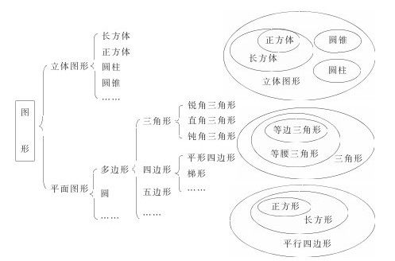
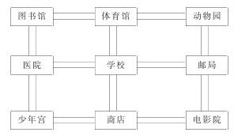
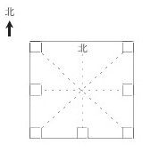

活动感悟提升 [1] ——“空间与图形”参与式培训提要
活动一认识图形朋友
活动目的
1.营造一个参与式活动的氛围，进一步感受参与式教学的广泛参与性、民主性、互补性、有效性等特点。
2.充分利用教师资源，丰厚教师的知识储备，增强教师适应课改的能力。
活动时间
90分钟
活动准备
小白纸（32K）每人1张；大白纸每组2张。
活动过程
1.在自己熟悉的图形中选择一个最熟悉的图形，在小白纸上画出它的形状，写出它的名称。
2.按所画的图形分组。
3.小组内交流该图形的基本特征、测量方法、转换及实际应用等。交流完后将结果写在大白纸上，并推荐一名中心发言人准备全班交流。
4.全班交流（边交流边板书），使大家对小学阶段所学的图形有个清晰的认识。

问题思考
1.“空间与图形”的内容结构为什么以“立体—平面—立体”为主线展开？这与几何学科中“点—线—面—体”的呈现方式有什么不同？
2.《数学课程标准》中“空间与图形”领域的内容及课程目标与以往数学课程中的几何内容及目标相比有哪些变化？为什么？
3.通过今天的活动，你对参与式教学有何感悟？这与过去的教学方式有什么不同？
有效教学的核心是“学生的参与”，其基本目标是改变学生的学习方式，促进学生的发展。单一、被动和陈旧的学习方式，已经成为推进素质教育的障碍。
（1）数学课堂的气氛如何，左右着学生通过互动认识数学思想和方法的质量，影响着学生通过交流获得反思和调整的机会，关系到学生通过合作养成尊重他人的意识和态度。
（2）让课堂“活”起来，目的在于使学生和教师都能找回那丢失已久的“自我”，建构起丰富的精神生活，享受生命成长的快乐。“活”表面上是课程的内容活、形式活、情境活，实质上是师生双方的知识活、经验活、智力活、能力活、情感活、精神活、生命活。“活”意味着师生双方的潜能的开发、精神的唤醒、内心的敞亮、个性的张显和主体性的弘扬，意味着师生双方经验的共享、视界的融合与精神的感召。
（3）新课程的教学定位为师生交往、积极活动、共同发展的过程，这是对教学关系的正本清源。在新课程中，教师逐步形成了“对话”意识，它意味着上课不仅是传授知识，而是一起分享理解，即教师与学生分享彼此的思考、经验和知识，交流彼此的情感、体验与观念，丰富教学内容，求得新的发现，从而达到共识、共享、共进，实现教学相长和共同发展，这也意味着上课不是单向的付出，而是生命活动、专业成长和自我实现的过程。
活动二典型教学案例分析
活动目的
1.引领教师转变教学方式，把新课程理念转化为具体的教学行为，落实在课堂教学的各个环节中。
2.提高教师分析教学案例的能力，在分析的过程中，提升自己驾驭课堂的水平。
活动时间
90分钟
活动过程
（一）观看教学内容及教学过程片段
教学内容：平移和旋转《义务教育课程标准实验教科书·数学》（北师大版）三年级下册第19-21页。
教学过程片断：
1.引入
（1）谈话：准备两个自制风车，让两名同学操作引出“旋转”。跑得越快，风车就旋转的越快，你们愿意玩吗？
请学生拿出课前自制的纸风车，玩一玩，让它旋转起来。
师：说说生活中还有哪些物体的运动是旋转的。
（2）录像播放学校升国旗片断。
（3）揭示课题，这节课我们就来研究平移和旋转。
2.新授
（1）生活中的平移和旋转。
师：在生活中我们经常可以见到平移和旋转现象，只要细心观察就能发现。
电脑显示：地铁运行、飞机螺旋浆转动、游乐场中的过山车、转动汽车方向盘、升旗、拨动算盘珠、拧水阀等画面。
学生找出哪些运动是平移，哪些是旋转。
（2）师生共同活动、表现平移和旋转。
在课桌上移动文具盒；
后排同学走到前面；
两个同学表演队列：向左转，向右转等。
学生可用手势，也可用肢体语言表示。
想一想，怎么用符号来表示：
平移：-或者|旋转：O或者
师生对口令练习（比划动作）
（3）在方格纸上将图形平移。
（4）画一画，按要求做出简单平面图形平移后的图形。
（二）问题与思考
1.《数学课程标准》为什么增加了“平移和旋转”的内容？
2.教师通过哪些参与式教学活动落实教学目标？
3.本节课中教师利用了哪些教学资源？平时在教学中你是怎么做的？
（三）写教学案例分析
（四）分小组交流
（五）全班交流，在交流中形成以下共识：
1.平移和旋转是常见的物体运动，在日常生活中随处可见，这些内容对学生认识丰富多彩的现实世界，形成初步的空间观念，以及对图形美的感受与欣赏都十分重要。另外，平移和旋转的数学思想又是后面学习三角形、平行四边形、梯形的面积计算推导的基础。因此，新课程标准增加了平移和旋转的内容。
2.让学生在生活情境中学习。
新《课程标准》强调学生的数学学习内容是“现实的”，“重视从学生的生活经验和已有知识中学习数学和理解数学”。空间与图形的知识与生活有着密切的联系，因此，提供日常生活中的实例，创设具体的生活情景十分重要。本课设计从儿童喜爱的玩具—纸风车，以及学校升国旗的活动引出课题，再让学生到日常生活中找一找平移和旋转的现象，如升国旗、拧开关、转盘等。学生的学习背景是生动的生活实例，学生从中体会到数学就在身边，数学就在自己的生活中，从而学会用数学的眼光看问题和关心、解决数学问题。
3.引导学生在操作体验中学习。
数学教学应是数学活动的教学，要尽可能地创设机会让学生“做”数学。本节课设计一系列活动，让学生通过看一看、找一找、做一做、移一移、画一画等方法进行操作、探索，通过具体实践操作，认识平移和旋转，并能按要求做出简单平面图形平移后的图形，发展学生的空间观念。
活动三教学活动设计与实践
活动目的
1.用理论指导实践，让教师全身经历参与式教学的全过程。
2.在实践中反思参与式教学，提高课堂教学的实效性。
活动时间
90分钟
活动过程
（一）熟悉教学内容、教材及设计要求
教学内容：辨认方向《义务教育课程标准实验教科书·数学》（北师大版）二年级下册，第22-23页
教材简介：本节教材是在学生已经会辨认东、南、西、北四个方向的基础上进一步学习辨认东南、东北、西南、西北四个方向。教材创设了一幅街道各建筑物的平面图，先复习已学过的四个方向，然后提出问题，让学生标出方向，制成方向板，再利用方向板辨认教室内、操场上八个方向分别有什么，帮助学生加深对方位的认识，最后在练一练中，通过运用知识进一步让学生体验数学与生活的联系，发展空间观念。
附：辨认方向平面图与方向板


设计要求：
1.要突出数学课程新理念，促进学生的发展。
2.要充分开发和利用课程资源，营造学生人人积极参与的氛围。
3.要给学生创设自主探究、合作交流的空间，让学生获得成功的体验，增强学好数学的信心。
（二）根据教学内容、教材简介及设计要求写出教学活动设计。
（三）小组交流个人的教学活动设计，并推举出代表进行简要的说课与做课。
（四）反思教学活动设计及实践过程，提出修改意见或完善的错施。
（五）问题思考
1.传统的“备课”与新课程提倡的“教学设计”有什么区别？（结合教学活动的设计、实践、反思进行点评）
（1）传统的“备课”定位在教，新课程提倡的“教学设计”定位在学。（传统的“备课”关注教学内容，新课程提倡的“教学设计”关注学生的发展）
（2）传统的“备课”是封闭的，新课程提倡的“教学设计”是开放的。
（3）传统的“备课”中止在课前，新课程提倡的“教学设计”贯穿教学的全过程（包括教学的前设计、中设计、后设计）。
（4）传统的“备课”是定式，新课程提倡的“教学设计”是变式，它可以不断地修改和完善。
2.好的教学设计体现在哪些方面？
好的教学设计是文本资源、学生资源、教师资源的融合和生成，体现在以下三个方面：
（1）重学生：即重学生的知识背景（学习能力、经验）、求知需求、发展目标。
（2）重教材：潜心的钻研教材，科学的补充教材，准确的加工教材，合理的超越教材。
（3）重教师：为学生提供积极的信息支持、精神支持和方法支持。
最后，我想借用一位教师的心语，作为这次培训的结束语：教师成长固然有赖于好的环境，但更重要的取决于自己的心态和作为。我认为社会是课堂，实践是砺石，他人是吾师，自身是关键。只要务实肯干，积极进取，开拓创新，就会在现实的土壤中找到自己的生长点，并以自己的成长影响周围。从这个意义上说，谁来给教师良好的成长环境？是教师自己。